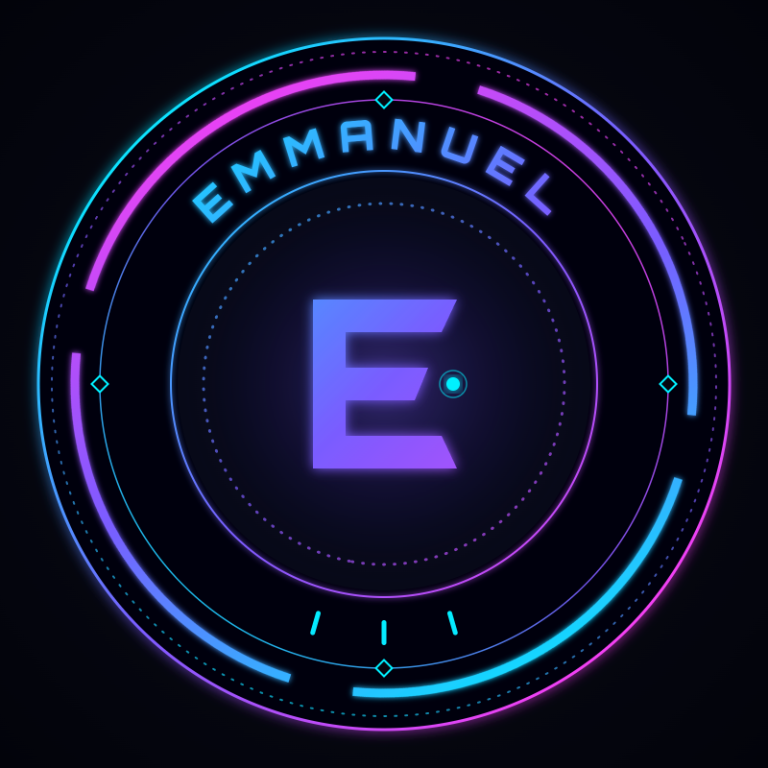

Kabataang MABA
Part of a youth group focused on helping kids in our barangay.

BSIT Student · Batangas State University - TNEU
I'm Emmanuel Albert A. Del Mundo, a BSIT student and self-study person. This little corner is about the people, interests, and experiences that matter to me.
Family first · Learning at my own pace
A few real experiences and ways I stay involved. Open a card for the context behind it.
Part of a youth group focused on helping kids in our barangay.
I’m part of Orvion and value being involved with the community.
A portfolio of tools, concepts, and browser games.
Building a responsive home for my story, interests, and the work I’m learning to do.
A browser-based dashboard for organizing students, dues, collections, and class-fund transactions.
Open Class Ledger
A concept for verifying Batangas State University diplomas, transcripts, and certificates against blockchain records.
Survive waves of enemies, collect scrap, and choose upgrades while your weapons automatically target nearby threats.
Play Dust FallFly through a hostile frontier, defend the last beacon, and upgrade your ship between missions.
Play VoidrunnerThis is a snapshot of what matters in my journey, not a dated timeline.
Exploring topics independently and learning at my own pace.
Learning HTML, CSS, JavaScript, responsive design, and UI design.
Being part of Kabataang MABA, Orvion, and Conexus.
Studying at Batangas State University - TNEU and continuing to grow.
People, purpose, and interests that give the work its meaning.
My family matters most, and I value the people who genuinely care about me.
Community involvement includes being part of Kabataang MABA.
Basketball, online games, and spending time with friends.
Have a question, idea, or opportunity to share? Reach out through any of these channels.